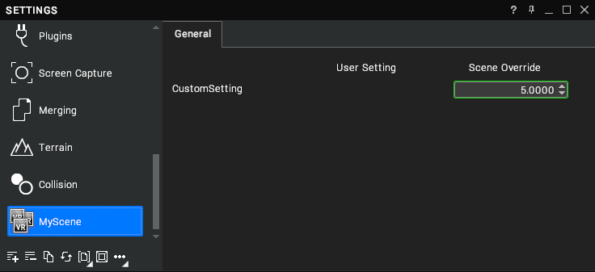

Work with Settings Nodes
Using Lua to interact with settings nodes
Visionary Render allows control over user and scene settings using the Lua API The Lua API works transparently with Scene Overrides – the API functions for accessing setting values always apply to the value that is currently active, whether that is the scene override value or the user value.
vrSettingRead
local clipPlanes = vrSettingRead("Renderer/Scene/ClipRange")
print(clipPlanes)
print(clipPlanes.x)
print(clipPlanes.y)
If the clip range is set at
0.1, 1000, this will output
0.100, 1000.000
0.10000000149
1000
vrSettingWrite
vrSettingWrite("Renderer/Scene/ClipRange", {0.3, 500.0})
local clipPlanes = vrSettingRead("Renderer/Scene/ClipRange")
print(clipPlanes)
This will output
0.300, 500.000
vrSettingGet
Lua can also get a handle to the setting and its value, which can be used for reading and writing.
local clipPlanes = vrSettingGet("Renderer/Scene/ClipRange")
print(clipPlanes)
print(clipPlanes.Value)
print(clipPlanes.Value.x)
print(clipPlanes.Value.y)
If the clip range is set at
0.1, 1000, this will output
Setting: [000000004E90D2A0, path:Renderer/Scene/ClipRange]
0.100, 1000.000
0.10000000149
1000
Scene Overrides and Settings
The Lua interface is capable of adding and removing scene overrides of user settings
Adding Override
vrSettingAddToScene("Renderer/Scene/ClipRange", {0,0})
vrSettingWrite("Renderer/Scene/ClipRange", {1.0, 200.0})
print(vrSettingRead("Renderer/Scene/ClipRange"))
This will output
1.000, 200.000
The first parameter to vrSettingAddToScene is the default value to assign if the setting does not exist in the system registry. (see Adding scene settings.) We then set the value of the setting, which applies it to the copy in the scene rather than the user setting.
Removing Override
vrSettingRemoveFromScene("Renderer/Scene/ClipRange")
print(vrSettingRead("Renderer/Scene/ClipRange"))
If the original clip range was 0.3, 500, this will output
0.300, 500.000
The scene override has been removed and the value is read from the user setting.
Adding scene settings in Lua
The Lua interface can also add new settings specifically for the scene providing the script. These settings are not saved in the user registry, only with the scene. They do, however, automatically trigger the generation of a new Settings category to allow instant user interaction with scene configuration settings.
The same function is used for this, vrSettingAddToScene.
vrSettingAddToScene("MyScene/CustomSetting", 5)
This results in an additional category in the settings interface, and an interface control for editing the setting value.

Removing this setting with vrSettingRemoveFromScene will remove this category from the settings window.
vrSettingRemoveFromScene("MyScene/CustomSetting")
Observing Settings
If querying the setting regularly is not convenient, the values can be observed
vrAddSettingObserver
This function makes use of the capability of passing local Lua functions into the API to be called later. The following line of code provides a simple function to print the value of a setting whenever it changes.
vrAddSettingObserver("clipobs", function(value) print(value) end, "Renderer/Scene/ClipRange")
Whenever the Clip Planes setting in the Renderer/Scene category is changed (e.g. by the user interface), the script will print the new value of the setting.
0.310, 500.000
0.320, 500.000
0.330, 500.000
0.320, 500.000
0.310, 500.000
0.300, 500.000
This doesn’t have to be an anonymous function, either, it can be a separate function defined locally or globally, and can also accept a string as the name of a global function.
local function printer(value)
print(value)
end
vrAddSettingObserver("clipobs", printer, "Renderer/Scene/ClipRange")
vrRemoveObserver
As with all other Lua observers, a setting observer is removed using its key with a call to vrRemoveObserver
vrRemoveObserver("clipobs")